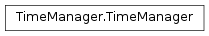

The WaveBlocks Project
@author: R. Bourquin @copyright: Copyright (C) 2010, 2011, 2012 R. Bourquin @license: Modified BSD License

This class performs several computation with time, timesteps and so for. The important quantities here are: T : the fixed simulation end time dt : the size of the timestep N : the overall number of timesteps. t : an unspecified time in the interval [0, T] n : an unspecified timestep in the interval [0, N] The importtant relations that hold are: T = N * dt and in analogy t = n * dt There are also conversion routines for t and n. Additionally the class contains some routines for determining if and when to save data. But we do not touch any data in here.
Add a list of times and/or timesteps to the list of times which determine when to save data. :param alist: A list with integers (interpreted as timesteps) and/or floats (interpreted as times) @note: The times and timesteps can be mixed and needn’t to be given in monotone order.
Compute the number of saves we will perform during the simulation. This can be used to determine how much space to allocate in the output files.
Computes the number of time steps we will perform.
Compute the time t from a timestep n such that t = n * dt holds. :param n: The timestep n of which we want to find the corresponding time.
Compute the timestep n from a time t such that t = n * dt holds. :param t: The time t of which we want to find the timestep number. @note: The user has to ensure that time is an integral multiple of dt.
Determine if we have to save right now. :param n: The current timestep in question.
Set the simulation endtime T. :param T: The simulation end time.
Set the simulation timestep size dt. :param dt: The simulation timestep size.
Set the inteval for saving results. :param interval: The interval at which we save simulation results. @note: A value of 0 means we never save data at any regular interval.
Set the number of timesteps the simulation runs. :param nsteps: The number timesteps we do.